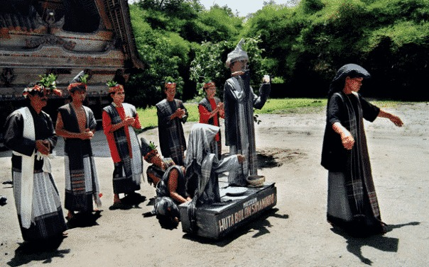
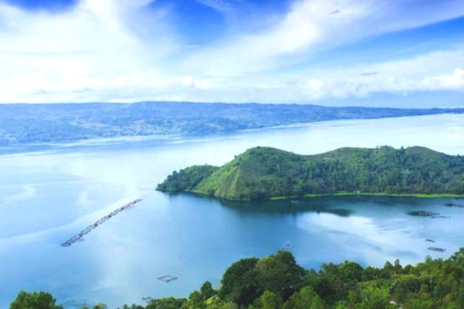
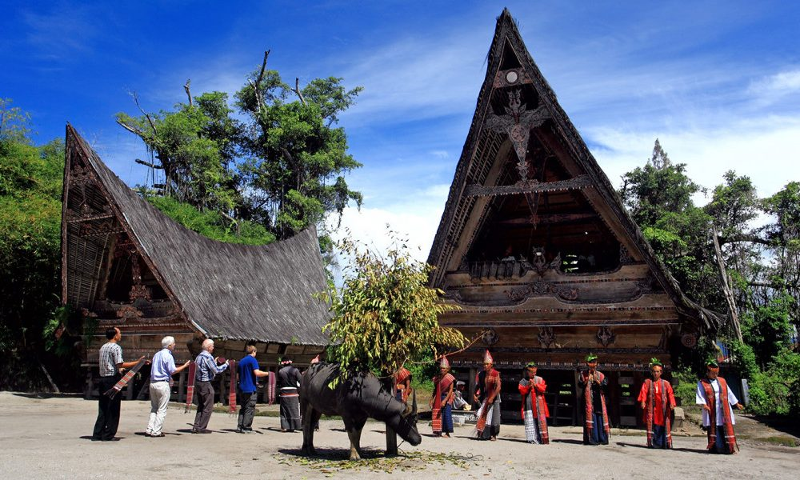
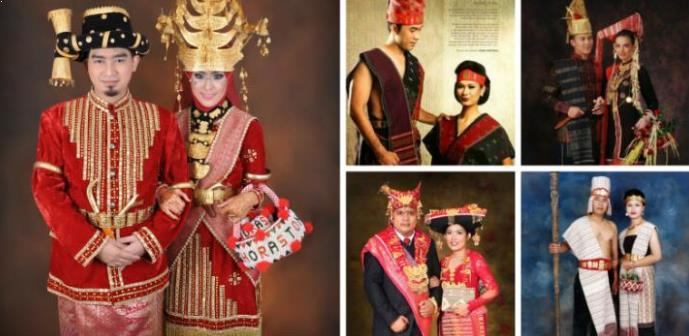
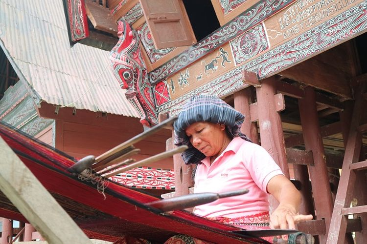

Lagenda Sigale-gale

Dahulu kala ada seorang Raja yang sangat bijaksana yang tinggal di
wilayah Toba. Raja ini hanya memiliki seorang anak, namanya
Manggale. Pada zaman tersebut masih sering terjadi peperangan antar
satu kerajaan ke kerajaan lain. Raja ini menyuruh anaknya untuk ikut
berperang melawan musuh yang datang menyerang wilayah mereka. Pada
saat peperangan tersebut anak Raja yang semata wayang tewas pada
saat pertempuran tersebut...
Baca Selengkapnya
Asal-usul Danau Toba

Danau Toba adalah salah satu destinasi wisata kebanggaan Indonesia
yang berada di Sumatera Utara. Toba adalah gunung api, dan legenda
letusan dahsyatnya telah menjadi bagian dari sejarah Nusantara,
bahkan dunia. Sejarah danau Toba tak terlepas dari letusan super
dahsyat yang membentuk danau ini dan keindahan yang ada di
sekitarnya saat ini...
Baca Selengkapnya
Rumah Adat Batak

Setiap rumah adat memiliki kekhasan yang mencirikan budaya daerah,
termasuk rumah Bolon atau rumah adat Batak. Rumah Bolon, Rumah Adat
Suku Batak di Sumatera Utara adalah salah satu rumah
adat suku Batak yang unik. Rumah tradisional yang dahulu menjadi
tempat tinggal raja-raja di Sumatera Utara yang berbentuk panggung
dan berbahan utama kayu...
Baca Selengkapnya
Pakaian Adat Batak

Pakaian adat Sumatera Utara didominasi oleh pakaian adat suku Batak yang disebut ulos, karena mayoritas
penduduk di provinsi beribukota Medan ini berasal dari suku Batak. Ulos digunakan hampir semua sub suku Batak,
hanya saja penamaan dan fungsinya berbeda-beda...
Baca Selengkapnya
Tentang Budaya Batak

Suku Batak adalah salah satu suku di Indonesia yang mempertahankan kebudayaannya. Mereka memegang teguh
tradisi dan adat. Sampai sekarang adat dan budaya tetap dilaksanakan dalam kehidupan sosial orang Batak dan
aktivitas sehari-harinya...
Baca Selengkapnya